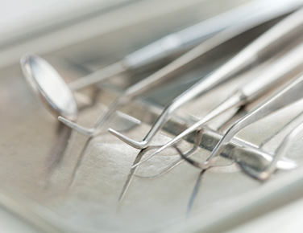
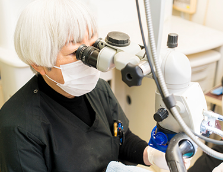
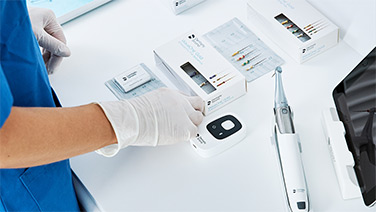
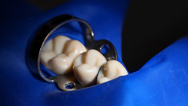
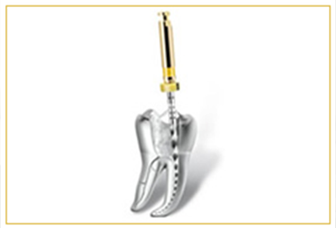
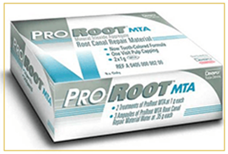
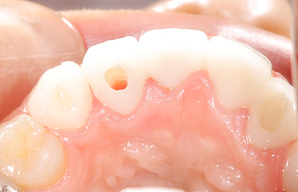
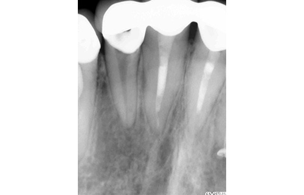
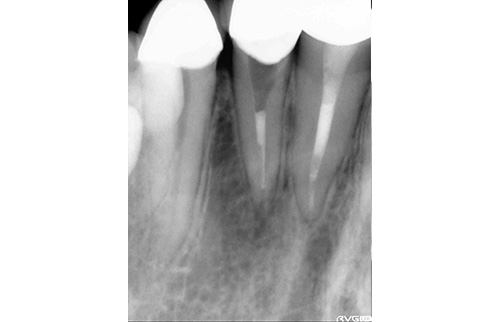

- ホーム
- 根管治療
最新機器による根管治療
四ツ橋駅から徒歩2分の吉川歯科医院では、虫歯が進行して歯の神経が死んでしまった場合に歯の根元をきれいに掃除して感染物質を取り除く根管治療をおこなっております。
従来の根管治療では、肉眼で根管内を詳細に確認することは不可能だっため歯科医師の経験や勘のみで根管内の清掃がおこなわれていましたが、当院ではマイクロスコープで歯を拡大して汚れを確認しながら治療を進めることができます。また、歯に空いた穴は殺菌効果もあるMTAセメントを使用して修復するため、抜歯を極力避けることが可能です。
根管治療とは

歯の根の部分には歯の神経や血管が通っています。虫歯が歯の根まで進行してその神経や血管が死んでしまった場合には、虫歯菌がこれ以上繁殖しないよう、死んだ神経も血管も除去し根管の消毒・掃除をおこなう必要があります。清掃しやすいように根管を形成・拡大し、根管を消毒、そして根管充填・修復という一連の処置をおこなうのが根管治療です。
根管の中は、一人ひとり異なる非常に複雑な形をしています。しかし、従来は、肉眼で目視することが難しく歯科医師の経験と勘と手の感覚を頼りに根管治療が行われてきました。当院では、検査の際に歯科用CTを用いて根管の形を調べる、精確なデータを取ります。また、マイクロスコープ（歯科用顕微鏡）を使って複雑な形状の根管をしっかり確認ながら確度の高い治療をおこなっております。
マイクロスコープ（精密歯科治療）

根管治療では、目視で確認できない数ミクロンの患部を施術しなければなりません。根管治療の結果は歯の寿命に大きく関係するため、ていねいに、そして精確に施術する必要があります。しかし、従来の根管治療では、歯科医師の経験と勘と手の感覚を頼りだったため、再治療や抜歯が必要になるケースも少なくありませんでした。
その課題を解決する最新機器がマイクロスコープです。歯を数十倍まで拡大できる歯科用の光学顕微鏡（マイクロスコープ）によって、眼で確認しながら確度の高い根管治療をおこなうことができるようになりました。当院では、マイクロスコープを使うことで細菌の再発のリスクを抑える精度が高い治療が可能です。
根管治療で使用するもの
-
Propex IQ 根管長測定器

専用のアプリを使って、根管長測定をしながら拡大形成が可能。iPad上でファイルの進行状況をビジュアルで確認できるため、リスク軽減にもつながります。
-
ラバーダム

ラバーダムとは、ゴム製の薄いシートです。治療する歯に装着して、周囲から唾液や細菌が混入するのを防ぎます。また、歯を削ったときの欠片や器具の誤嚥防止にも効果を示します。
※表は左右にスクロールして確認することができます。
 |
 |
NiTiファイルNiTiファイルとは、柔軟性のある金属製の器具です。複雑な形状をした根管でも形成や拡大をしやすくなります。 |
MTAセメントを用いた根管リペア剤根管治療をする際に、細菌が根管外へ出るのを防ぐためにMTAセメントを使用することがあります。MTAセメントは、水硬性なので根管からはみ出しても吸収される安全性の高い材料です。また、MTAセメントを使用するとセメント質という硬組織が形成されるため、生体親和性の高い材料ともいえます。実際に当院でMTAセメントを使用する症例は以下のものがあります。 |
| 吉川歯科医院のＭＴＡセメント使用例 |
|---|
|
MTAセメントの症例
- 
- 
- 
料金表
| MTA（1歯） | ¥10,000 |
|---|
※表記価格は税別価格になります。